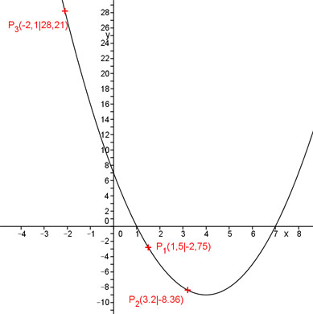

Aufgabe 79 Wie lautet die Funktionsgleichung einer Parabel der Form y = ax2 + bx + c, wenn ihr Graph durch die Punkte P1(1,5|-2,75), P2(3,2|-8,36) und P3(-2,1|28,21) geht? P1 ergibt: x = 1,5 und y = -2,75 Eingesetzt in y = ax2 + bx + c -2,75 = a * 1,52 + b * 1,5 + c 2,25a + 1,5b + c = -2,75 (1) P2 ergibt: x = 3,2 und y = -8,36 Eingesetzt in y = ax2 + bx + c -8,36 = a * 3,22 + b * 3,2 + c 10,24a + 3,2b + c = -8,36 (2) P3 ergibt: x = -2,1 und y = 28,21 Eingesetzt in y = ax2 + bx + c 28,21 = a * (-2,1)2 + b * (-2,1) + c 4,41a – 2,1b + c = 28,21 (3) Lösung des linearen Gleichungssystems mit (1) , (2) und (3): (1) * (-1) + (2) ergibt -2,25a - 1,5b - c = 2,75 10,24a + 3,2b + c = -8,36 ---------------------------- 7,99a + 1,7b = -5,61 (4) (1) * (-1) + (3) ergibt -2,25a - 1,5b - c = 2,75 4,41a – 2,1b + c = 28,21 -------------------------- 2,16a – 3,6b = 30,96 (5) (4) * 3,6 + (5) * 1,7ergibt: 28,764a + 6,12b = -20,196 3,672a – 6,12b = 52,632 --------------------------- 32,436a = 32,436 |:32,436 a = 1 In (4) eingesetzt: 7,99 + 1,7b = -5,61 |-7,99 1,7b = -13,6 |:1,7 b = -8 In (1) eingesetzt: 2,25 + 1,5 * (-8) + c = -2,75 2,25 - 12 + c = -2,75 |+9,75 c = 7 Gesuchte Funktion: y = x2 - 8x + 7 